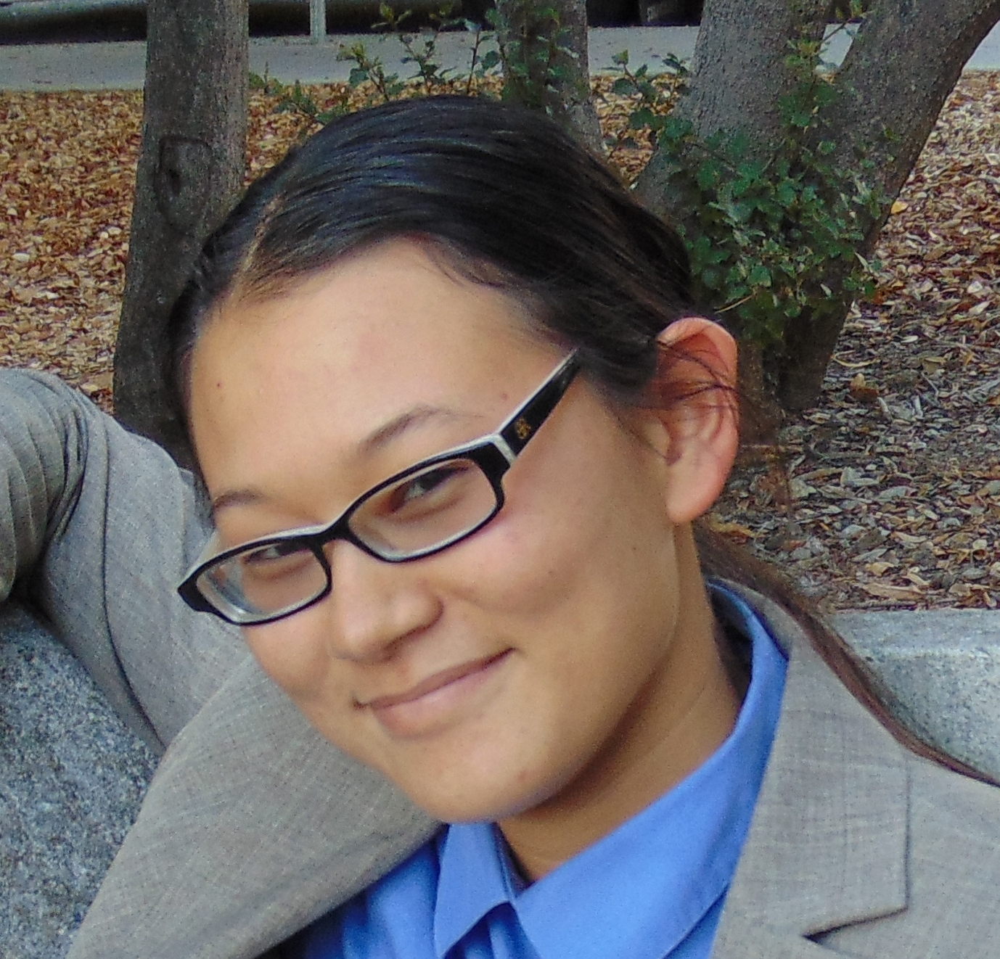

|  |
|
Laura-Ei Brandt, PhD, is a space systems engineer in Blue Origin's Lunar program, working on a lander that will return humans to the Moon in the late 2020s/early 2030s. With a broad but practised background in EE, Physics, Systems, STEM Policy, and AI, she has previously made electronics for Venus probes and the South Pole Telescope, designed sensors to keep rocket engines from exploding, provided technical insight to the executive and legislative branches of the US government, and researched methods for bringing advances in computer vision to challenging environments like space and terrestrial wilderness.
Dr. Brandt was an NSF Fellow and graduated in 2024 with a PhD from the Robust Robotics Group at MIT. She holds a doctoral minor in Space Systems Engineering, and is building her career around developing human-driven systems for exploring space, in addition to continuing her research at the juncture of human, computer, and robot vision. Her current role centres on systems engineering, process definition, stakeholder interactions, impact analysis, and risk management for a moon lander.
In addition to her work in R&D at Blue Origin and elsewhere, Laura-Ei has enjoyed teaching mathematics, physics, and electrical engineering for as long as she can remember. Her first such 'official' activity was as the primary author of an outreach curriculum about the ancient 'battle' between bacteria and fungi and the human discovery of antibiotics, which was produced under the auspices of the UW Madison microbiology & immunology department and delivered to area middle schools when Laura-Ei was herself a middle schooler. Since then, she has engaged in outreach, mentored interns, and taught classes at UW Madison, UC Berkeley, MIT, and Blue Origin.
More generally, Dr. Brandt is passionate about communicating the positive impact of STEM R&D to anyone who will listen. Dr. Brandt (President '22 MIT Science Policy Initiative) has had the opportunity to be the face of MIT's graduate student researchers to the executive and legislative branches of the federal government, and has facilitated opportunities for others (undergraduate thru postdoc) to work with their representatives on the Hill. Now, as an early-career industry professional, Laura-Ei continues to actively engage in advocacy for STEM-positive policy at all levels (municipal thru federal), and was recently honoured with an invitation to become a Local Science Partner of the American Geophysical Union.